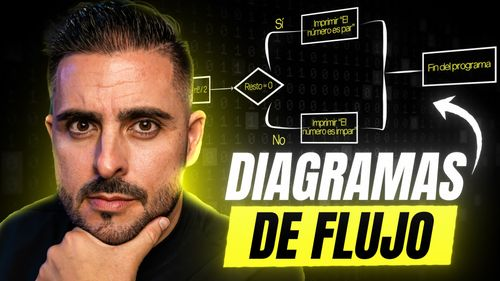

Últimas noticias del blog
Descubre aquí las últimas noticias de nuestro blog.

¿Qué es un diagrama de flujo y por qué es tan útil?
Un *diagrama de flujo* es una representación visual de un proceso mediante símbolos y flechas que indican el flujo y el orden de ejecución. En pocas palabras, es un mapa que muestra los pasos a seguir para resolver un problema o completar una tarea.
¿Qué es un algoritmo y por qué es tan importante?
Un *algoritmo* es un conjunto de instrucciones ordenadas y definidas para resolver un problema o realizar una tarea. Es como una receta de cocina: tienes ingredientes (datos de entrada), sigues una serie de pasos (proceso) y obtienes un resultado (salida).
Desarrollo Full-Stack para perfiles junior
La dualidad entre el trabajo frontend y backend de un perfil Full-Stack requieren de un conocimiento profundo de varias tecnologías y la habilidad de ver el proyecto desde una perspectiva integral. En este artículo se explica como dicha habilidades aplican a perfiles junior.
El desarrollador Full Stack Marketer
Este artículo explora el concepto del desarrollador Full Stack Marketer, destacando cómo su perfil único está redefiniendo las estrategias digitales y abriendo nuevas vías para la innovación en el marketing y el desarrollo web.
Ver más